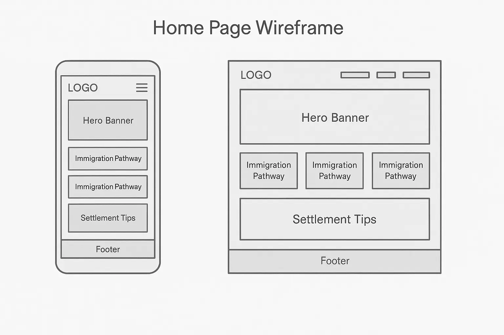

Site Purpose
The website serves as a hub for newcomers to Canada, offering clear explanations of immigration pathways such as Express Entry, Family Sponsorship, and Provincial Nominee Programs (PNPs). It also provides settlement tips, resources for adapting to Canadian life, and personal insights from someone who has experienced the process first-hand.
Scenarios
- “Which immigration program is the fastest way to move to Canada with my family?”
- “What should I do during my first weeks in Canada to settle successfully?”
Color Schema
The chosen colors are designed to convey trust, clarity, and a welcoming feel:
- #1E3A8A (Dark Blue) – Used for headings and navigation menu to represent trust and stability.
- #E5F4FD (Light Blue) – Used for background areas and accents to give a calm and clean appearance.
Typography
- Montserrat – Used for headings to create a modern, professional look.
- Roboto – Used for body text for easy reading on all devices.
Wireframes
Below are basic wireframe (Mobile and Desktop) sketches of the homepage layout:

Note: Wireframes show the main sections: header with logo and menu, hero banner, immigration pathway cards, settlement tips, and footer.